操作マニュアル
Unity の Tools → Particle Live Toolkit を開きます。初めてライブを作る方は「シーンを準備する」から、制作中の方は今の作業から読み進めてください。画面例はタップまたはクリックで原寸表示できます。
シーンを準備する
- Toolkit の左側で Project を開き、ライブ名、BPM、楽曲、出力先フォルダを指定します。楽曲は任意です。あとで音を聴きながら編集する場合は、ここで音源を選びます。
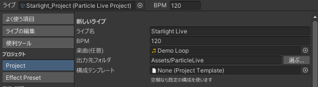
楽曲欄に音源を入れ、BPM と出力先を確認します。 - 「作られるもの」を確認し、ライブを生成を押します。新規シーンが開き、黒い Skybox、観客視点のカメラ、メインの AnimationClip と編集用 Timeline が用意されます。選んだ音源には Load In Background と Preload Audio Data が設定されます。
- Hierarchy でライブ名の下の Animation を選び、Unity の Window → Sequencing → Timeline を開きます。音源とメインクリップは先頭から並んでいます。Timeline のアニメーションクリップをダブルクリックすると、Animation ウィンドウでキーを編集できます。

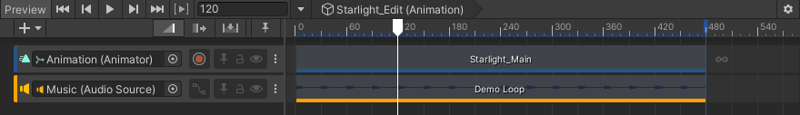
演出用のオブジェクトは Animation → Effects の下に置きます。Animator と Timeline の PlayableDirector は同じ Animation オブジェクトにあり、この階層を基準にクリップが各演出を参照します。
曲に目印を付ける
小節や音符の長さを秒数欄へ貼り付ける
上部の「ライブ」と「BPM」を確認し、よく使う項目 → 秒数コピーで「1小節」「2小節」「4小節」「2分」「4分」「3分」のいずれかを押します。たとえば BPM 120・1小節4拍なら「4分」で 0.5 秒、「1小節」で 2 秒をコピーできます。Particle System の Start Lifetime など、秒数を使う欄に貼り付けてください。
別の音符や倍率を使うときは Beat を開きます。倍率とフレームレートを指定すると、各行で秒数と対応するフレーム数を見比べられます。「コピー」で取得する値は秒数です。
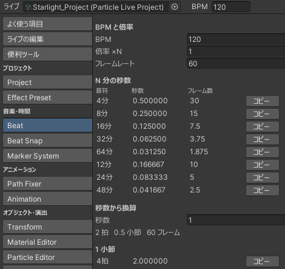
サビの頭にマーカーを置く
編集中のライブの Timeline でサビの頭に再生ヘッドを置き、Marker System → 現在位置にマーカーを追加を押します。行に「サビ入り」などの名前と色を付けます。位置はメインクリップの fps に基づくフレーム番号で、60 fps なら 2 秒の位置は 120 f です。数値を編集して位置を微調整でき、「移動」でその箇所へ戻れます。
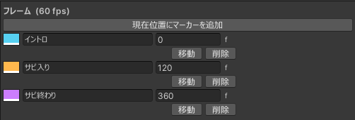
キーを編集する
再生ヘッドを拍に合わせて進める・戻す
Toolkit上部でライブとBPMを確認し、UnityのAnimationウィンドウにフォーカスして押します。再生ヘッドが指定した長さだけ移動します。1小節の長さにはライブの拍数設定も反映されます。
- 1小節
- 戻る Alt + Shift + ← または Alt + 3 進む Alt + Shift + → または Alt + 4
- 4分音符
- 戻る Alt + ← または Alt + 1 進む Alt + → または Alt + 2
- 16分音符
- 戻る Alt + Ctrl + ← または Alt + 5 進む Alt + Ctrl + → または Alt + 6
数字はキーボード上段を使います。macOSではAltはOption、16分音符の矢印操作のCtrlはCommandです。割り当ては Edit → Shortcuts → Particle Live で変更できます。
選択したオブジェクトを指定フレームで出現させる
メインクリップを開き、Hierarchy で Animator 配下の演出オブジェクトを選びます。Unity の Animation ウィンドウで出現させたいフレームに再生ヘッドを置き、Ctrl + R を押します。たとえば 120 f で実行すると、アクティブ状態に 119 f でオフ、120 f でオンのキーが入ります。0 f で実行するとオンのキーだけが入ります。
選んだキーをまとめて拍に揃える
Animation ウィンドウで移動したいキーを選び、Beat Snap で「音符」を指定します。曲の最初の拍が音源の先頭より 0.2 秒遅ければ「曲頭オフセット（秒）」に 0.2 を入力し、選択キーを拍に合わせるを押します。移動先でキーが重なると処理は中止されます。一律にずらす場合は Toolkit の Animation → 選択キーを時間移動で秒数を指定できます。
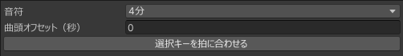
作った点滅を4回ずつ繰り返す
- Unity の Animation ウィンドウで、繰り返したいカーブの最初と最後のキーを選びます。よく使う項目 → 現在の範囲を取得を押すと、選んだカーブだけが対象になり、その範囲内のキーをまとめて使えます。
- 「ビートで4回」を押すと、元の点滅のコピーが1拍間隔で4回追加されます。もう一度押すと続きにさらに4回入ります。「2ビートで4回」「4ビートで4回」に切り替えると、続きから間隔を広げられます。
- 別の点滅を元にしたいときは、キーを選び直して「現在の範囲を取得」を押します。元の範囲が間隔より長いときは、取得範囲を短くするか、長い間隔を選んでください。
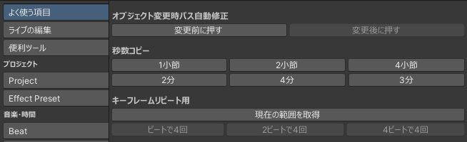
回数や間隔を細かく指定する場合は Toolkit の Animation を開き、対象クリップ、範囲、対象カーブ、間隔、回数を設定します。「プレビュー」で追加・削除されるキー数を確認して「複製を実行」を押します。複製先のキーを消す・残す・中止する設定と「フレームに合わせる」は、「よく使う項目」のリピートにも反映されます。
演出を作る
初期設定済みの床・パーティクルを置く
Hierarchy で配置先の親（例：Animation 配下の Effects）を選び、便利ツールで使いたいボタンを押します。作成後はそのオブジェクトが選択されるので、Inspector で位置や見た目を調整できます。
- 透明な床（Collider）
- 描画のない 10 × 10 m の床を追加します。広さや厚みは Box Collider の Size で変更できます。
- マテリアル付き Particle
- Renderer にマテリアルを設定した標準の Particle System を追加します。
- マテリアル付き Trail Particle
- Trails を有効にし、粒子本体と軌跡の両方にマテリアルを設定します。
- Burst 100
- Emission の Rate over Time を 0 にし、開始時に100個をまとめて放出します。個数は Bursts の Count で変更できます。
- 広範囲に降る雪
- 高さ 8 m にある 20 × 20 m の範囲から重力で雪を降らせます。降る範囲は Shape、落ち方は Gravity Modifier で調整できます。
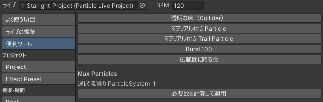
演出のピークに合わせて Max Particles を設定する
プレビューを終了し、Hierarchy で対象の Particle System またはその親を選びます。便利ツール → Max Particles で対象数を確認し、「必要数を計算して適用」を押します。Duration、Start Lifetime、放出レート、Burst の個数や繰り返し、アニメーション中の値を考慮し、推定した同時生存数に 25% と8個の余裕を加えます。移動距離で放出する粒子や親から発火する Sub Emitter など、上限を決められないものはスキップされ、理由が表示されます。
複数の粒子・マテリアルに同じ設定を適用する
Particle Editor では対象の階層を選び、変更したい項目にチェックを入れて値を指定し、「指定項目を変更」を押します。既存の粒子から設定を引き継ぐには、コピー元とモジュールを選んで「モジュールをコピー」を使います。
Material Editor では Project でマテリアルを選ぶか、Hierarchy で Renderer を含む階層を選びます。対象に共通するプロパティを選んで「プロパティを一括変更」を押します。共有マテリアルの編集は、それを使う他の Renderer の見た目にも反映されます。選択階層の割り当てだけを変える場合は、置換元と置換先のマテリアルを指定します。
作った演出を別の場面で使う
Hierarchy で演出の親を選び、Effect Preset で保存カテゴリを入力して「選択した演出を保存」を押します。次に使うときはカテゴリで絞り込み、サムネイル横の「配置」を押してください。別の Unity プロジェクトへ渡すときは「書き出し」で依存アセットを含むパッケージを作れます。
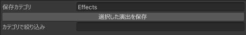
階層を整理する
複数の演出を同じ間隔で並べる
Hierarchy で2個以上のオブジェクトを選び、Transform の「等間隔」または「円形」を開きます。並べる順序と配置の値を指定して「等間隔に並べる」または「円形に並べる」を押します。「ミラー」では「複製して反対側に置く」を選ぶと元の演出を残せます。
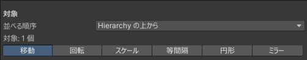
名前や親を変えた後も同じキーで動かす
- よく使う項目 → オブジェクト変更時パス自動修正で「変更前に押す」を押し、現在の階層を記録します。
- 同じ Animator の下でオブジェクトを改名するか、親を変更します。「変更後に押す」を押して、クリップの参照パスを更新します。
- 参照先を個別に確認したい場合は Path Fixer を開きます。「検知した変更」から対象を選ぶか、「手動リマップ」に旧パスと新パスを入力します。「プレビュー」で対象クリップを確認して「パスを修正」を押します。
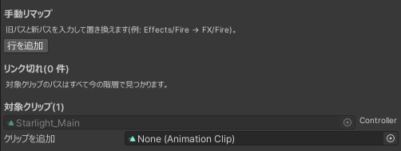
まとめて改名するときは Batch Rename で対象を選び、連番・接頭辞・置換などの結果を一覧で確認します。同じ Animator 配下なら「Animation パスも修正」を選んで「表示した名前を適用」を押すと、改名と参照の更新を一度で行えます。
確認・再開する
いま編集している箇所を聴き直す
ライブの Timeline または Animation ウィンドウで確認したい位置に再生ヘッドを置き、スペースを長押しします。押している間は試聴が続き、離すと押し始めた位置に戻ります。短く押すと通常の再生・停止に使えます。
観客視点でサビを繰り返し見る
- Scene ビューを観客の位置に合わせ、Preview → 観客視点 → Scene ビューから追加を押します。高さや FOV（視野角）は一覧で調整できます。
- 視点を選んで「区間ループ」を有効にし、サビの開始と終了を指定します。Marker System に登録したマーカーも端点に使えます。「再生」を押すと Play Mode に入らずに確認できます。
- 途中から見るときに長寿命の粒子がまだ出そろっていなければ、pre-roll の秒数を長くします。指定した位置より手前から粒子を計算できます。
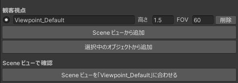
Unity を閉じた後や、別のライブを編集した後に戻る
ライブの編集の「読み込むライブ」に目的のライブの Project アセットを指定し、「ライブ設定を読み込む」を押します。「再開フレーム」を確認してこのライブの編集に戻るを押すと、そのライブのシーンとメインクリップを開き、記録した編集位置に戻れます。
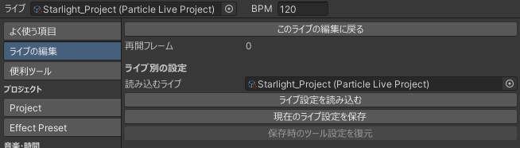
BPM、曲頭オフセット、1小節の拍数、各ツールの設定値を今の組み合わせで残すには「現在のライブ設定を保存」を押します。別の設定を試した後は「保存時のツール設定を復元」で戻せます。保存先はライブごとのアセットなので、同じ Unity プロジェクトで複数のライブを進めても、それぞれの設定を呼び出せます。